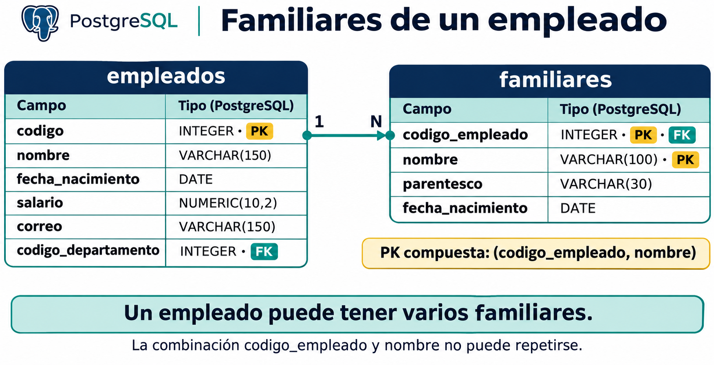
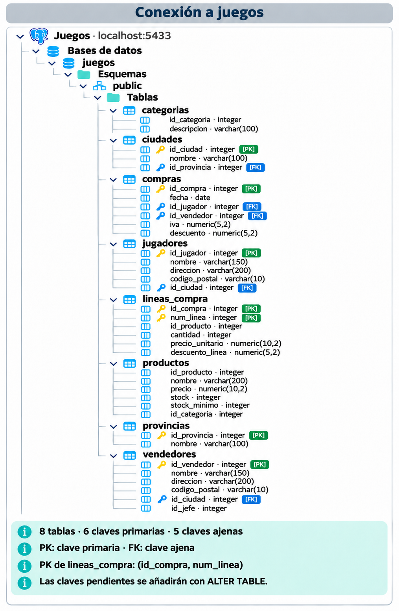

Restricciones
Las restricciones definen las reglas que deben cumplir los datos de una tabla. En CREATE TABLE podemos declararlas sobre una columna o sobre varias columnas. Las claves ajenas permiten además mantener la coherencia entre tablas y representar la participación obligatoria en una relación.
Restricciones de una columna
Las restricciones de columna establecen las reglas que debe cumplir un campo: exigir un valor, evitar duplicados, identificar una fila o referenciar otra tabla. Se escriben después del tipo de dato y pueden recibir un nombre mediante CONSTRAINT.
Sintaxis básica
[ CONSTRAINT nombre ] { PRIMARY KEY | UNIQUE | NOT NULL | REFERENCES tabla2 [(columna1)] | CHECK (condicion) } |
Opciones
CONSTRAINT: asigna un nombre a la restricción.REFERENCES: indica la clave referenciada.
- PRIMARY KEY: identifica la fila, sin duplicados ni nulos.
- NOT NULL: exige un valor.
- UNIQUE: impide duplicados; en su comportamiento normal permite varios nulos.
- CHECK: exige que una expresión no sea falsa. Si el resultado es desconocido por un NULL, la fila puede aceptarse; añade
NOT NULLsi el dato es obligatorio. - REFERENCES: exige que el valor no nulo exista en una clave referenciada.
Pruébalo: Restricciones de columna en departamentos y empleados
Desde la conexión a pruebas, recrea las dos tablas con restricciones. Como las tablas del apartado anterior están vacías, elimínalas primero; DROP TABLE, que estudiaremos más adelante, elimina su estructura.
DROP TABLE empleados;
DROP TABLE departamentos;
CREATE TABLE departamentos (
codigo INTEGER PRIMARY KEY, -- Restricción de columna: PRIMARY KEY
nombre VARCHAR(100) NOT NULL UNIQUE -- Restricciones de columna: NOT NULL y UNIQUE
);
CREATE TABLE empleados (
codigo INTEGER PRIMARY KEY, -- Restricción de columna: PRIMARY KEY
nombre VARCHAR(150) NOT NULL, -- Restricción de columna: NOT NULL
fecha_nacimiento DATE,
salario NUMERIC(10,2) DEFAULT 0 CHECK (salario >= 0), -- Restricción de columna: CHECK
correo VARCHAR(150) UNIQUE, -- Restricción de columna: UNIQUE
codigo_departamento INTEGER REFERENCES departamentos(codigo) -- Restricción de columna: REFERENCES
);
Crea primero departamentos, porque empleados.codigo_departamento referencia a su clave primaria. Un departamento puede tener varios empleados. Conserva ambas tablas para los siguientes ejemplos.
Restricciones de varias columnas
Las restricciones de tabla permiten definir claves que abarcan varias columnas y condiciones que relacionan distintos campos. Se incluyen dentro de CREATE TABLE, separadas de las definiciones de columna mediante comas.
Sintaxis básica
[ CONSTRAINT nombre ]{ { PRIMARY KEY | UNIQUE | FOREIGN KEY } (columna1 [, columna2, ...]) [ REFERENCES tabla2 [ (columna_ref1 [, columna_ref2, ...]) ] ] [ ON DELETE { CASCADE | SET NULL } ] [ ON UPDATE { CASCADE | SET NULL } ]| CHECK (condicion) } |
Opciones
CONSTRAINT: asigna un nombre a la restricción.REFERENCES: indica la tabla y las columnas referenciadas; se utiliza conFOREIGN KEY.ON DELETE / ON UPDATE: acciones de la clave ajena al borrar o actualizar la fila referenciada. Si se omiten, se aplicaNO ACTION.CHECK: lleva su condición entre paréntesis, sin añadir otra lista de columnas.
En una FK compuesta, el número y los tipos de las columnas deben ser compatibles con los de la clave referenciada.
Para practicar una clave primaria compuesta, crearemos una tabla nueva: familiares. Guardará los familiares de cada empleado. Conservaremos departamentos y empleados tal como están; no añadiremos ninguna columna a empleados.
La PK de familiares será (codigo_empleado, nombre). Un empleado puede tener varios familiares y el mismo nombre puede aparecer para distintos empleados; lo que no podrá repetirse será la combinación de código de empleado y nombre del familiar.

Pruébalo: Familiares de un empleado
Desde la conexión a pruebas, crea familiares después de haber creado empleados:
CREATE TABLE familiares (
codigo_empleado INTEGER,
nombre VARCHAR(100),
parentesco VARCHAR(30) NOT NULL, -- Restricción de columna: NOT NULL
fecha_nacimiento DATE,
CONSTRAINT pk_familiares PRIMARY KEY (codigo_empleado, nombre), -- Restricción de tabla: PRIMARY KEY compuesta
CONSTRAINT fk_familiares_empleados FOREIGN KEY (codigo_empleado) -- Restricción de tabla: FOREIGN KEY
REFERENCES empleados(codigo),
CONSTRAINT ck_familiares_parentesco -- Restricción de tabla: CHECK
CHECK (parentesco IN ('hijo', 'hija', 'conyuge', 'otro'))
);
La PK compuesta obliga a informar codigo_empleado y nombre, y evita que se repita la pareja. La FK exige que cada familiar pertenezca a un empleado existente. CHECK limita los valores de parentesco. Las restricciones de tabla se escriben separadas de las columnas, aunque algunas, como CHECK, solo afecten a un campo.
Claves ajenas y participación
Las acciones de ON DELETE y ON UPDATE son:
| Acción | Efecto sobre las filas que contienen la FK |
|---|---|
NO ACTION |
Rechaza la operación si al comprobar la restricción quedan referencias sin destino. Es la acción predeterminada. |
RESTRICT |
Impide la operación si hay referencias; esta comprobación no se puede aplazar. |
CASCADE |
Propaga el borrado o la actualización de la clave referenciada. |
SET NULL |
Asigna NULL a la referencia; requiere que las columnas afectadas admitan nulos. |
SET DEFAULT |
Aplica su valor por defecto, que debe seguir cumpliendo la FK. |
En las tablas de pruebas, empleados.codigo_departamento referencia a departamentos.codigo. Como admite nulos, un empleado puede estar sin departamento: la clave ajena por sí sola no obliga a rellenarla. Si añadiéramos NOT NULL a esa columna, todo empleado tendría que pertenecer a un departamento existente; así representaríamos su participación total en la relación.
En familiares, en cambio, codigo_empleado ya es obligatorio porque forma parte de la PK compuesta: todo familiar debe pertenecer a un empleado existente.
Se aplica NO ACTION por defecto: no podemos borrar un departamento mientras haya empleados que lo referencien. Si hubiéramos definido esa FK con ON DELETE CASCADE, borrar el departamento también intentaría borrar sus empleados; otras referencias, como las de familiares, podrían impedirlo. La acción debe elegirse teniendo en cuenta todas las relaciones.
Ejercicios: Crear tablas con restricciones
Continúa sobre la misma base de datos y conserva las tablas de los ejercicios 1 y 2. Añade las sentencias a 02_juegos.sql. No es necesario volver a crear categorias ni productos.
Ejercicio 3: Crear provincias
Juegos
Campos de provincias
| Campo | Tipo de dato |
|---|---|
id_provincia |
SERIAL |
nombre |
VARCHAR(100) |
Crea provincias con sus dos campos y define id_provincia como clave primaria.
Ejercicio 4: Crear ciudades
Juegos
Campos de ciudades
| Campo | Tipo de dato |
|---|---|
id_ciudad |
SERIAL |
nombre |
VARCHAR(100) |
id_provincia |
INTEGER |
Crea ciudades. Define id_ciudad como clave primaria y id_provincia como clave ajena hacia provincias(id_provincia).
Ejercicio 5: Crear vendedores
Juegos
Campos de vendedores
| Campo | Tipo de dato |
|---|---|
id_vendedor |
SERIAL |
nombre |
VARCHAR(150) |
direccion |
VARCHAR(200) |
codigo_postal |
VARCHAR(10) |
id_ciudad |
INTEGER |
id_jefe |
INTEGER |
Crea vendedores con su clave primaria y la clave ajena id_ciudad hacia ciudades(id_ciudad). Incluye la columna id_jefe, pero deja pendiente su clave ajena reflexiva hasta el ejercicio 12.
Ejercicio 6: Crear jugadores
Juegos
Campos de jugadores
| Campo | Tipo de dato |
|---|---|
id_jugador |
SERIAL |
nombre |
VARCHAR(150) |
direccion |
VARCHAR(200) |
codigo_postal |
VARCHAR(10) |
id_ciudad |
INTEGER |
Crea jugadores con su clave primaria y la clave ajena id_ciudad hacia ciudades(id_ciudad).
Ejercicio 7: Crear compras
Juegos
Campos de compras
| Campo | Tipo de dato |
|---|---|
id_compra |
SERIAL |
fecha |
DATE |
id_jugador |
INTEGER |
id_vendedor |
INTEGER |
iva |
DECIMAL(5,2) |
descuento |
DECIMAL(5,2) |
Crea compras con su clave primaria y las claves ajenas hacia jugadores y vendedores. Define id_jugador e id_vendedor como NOT NULL: toda compra debe tener un jugador y un vendedor.
Ejercicio 8: Crear lineas_compra
Juegos
Campos de lineas_compra
| Campo | Tipo de dato |
|---|---|
id_compra |
INTEGER |
num_linea |
INTEGER |
id_producto |
INTEGER |
cantidad |
INTEGER |
precio_unitario |
DECIMAL(10,2) |
descuento_linea |
DECIMAL(5,2) |
Crea lineas_compra con la clave primaria compuesta (id_compra, num_linea) y con id_producto obligatorio. No añadas todavía ninguna de sus dos claves ajenas: las incorporarás en el ejercicio 13. La PK compuesta debe declararse como restricción de tabla.
Antes de continuar: Debes tener ocho tablas, seis PK y cinco FK. Las PK de categorias y productos, la FK de productos, la relación reflexiva y las dos FK de lineas_compra siguen pendientes. Las completarás con ALTER TABLE.
Actualiza la conexión Juegos y despliega Bases de datos → juegos → Esquemas → public → Tablas. Después del ejercicio 8 deben aparecer las ocho tablas, como en esta imagen orientativa. Todas están desplegadas para comprobar sus columnas y tipos de datos:
